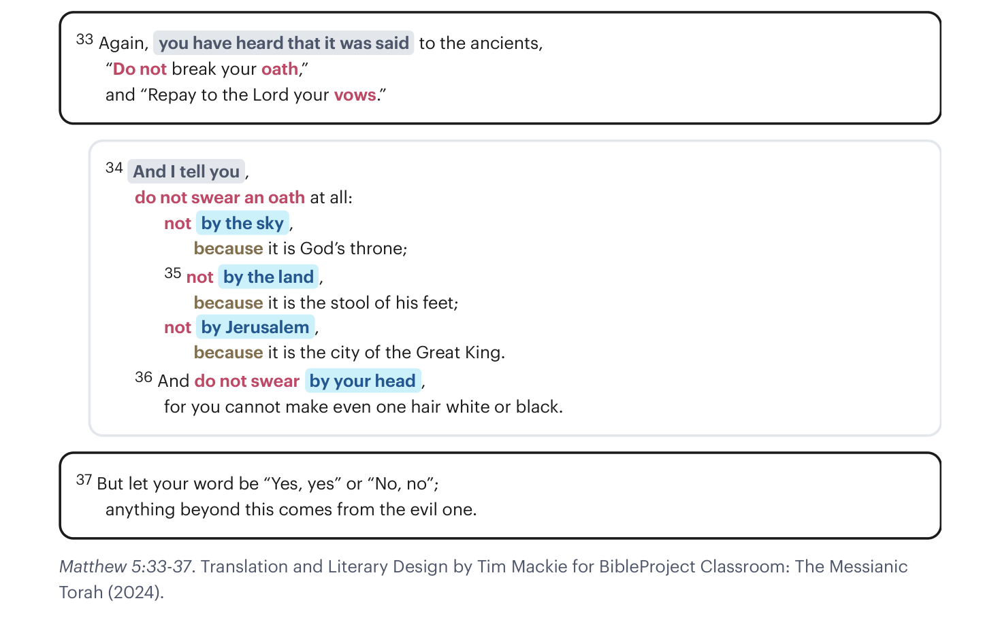

Jesus não cita de nenhum lugar da Torá. Antes, as suas palavras são uma paráfrase de múltiplas passagens sobre juramentos e votos.Jesus doesn’t quote from any one place in the Torah. Rather, his words are a paraphrase of multiple passages about oaths and vows.

Mateus 5:33-37. Tradução e Design Literário por Tim Mackie para BibleProject Classroom: The Messianic Torah (2024).Matthew 5:33-37. Translation and Literary Design by Tim Mackie for BibleProject Classroom: The Messianic Torah (2024).
Votos são promessas feitas a Deus sobre sacrifícios ou ofertas que serão feitas se as orações forem respondidas.Vows are promises made to God about sacrifices or offering that will be made if prayers are answered.
Por exemplo, em Gênesis 28:20-22, Jacó faz um voto de que se Deus estiver com ele e o mantiver seguro, então ao retornar à terra, Yahweh se tornará o seu deus, ele fará de Betel um lugar de adoração a Yahweh, e ele dará um décimo da sua riqueza a Yahweh.For example, in Genesis 28:20-22, Jacob makes a vow that if God is with him and keeps him safe, then upon returning to the land, Yahweh will become his god, he will make Bethel a place of worship to Yahweh, and he will give one-tenth of his wealth to Yahweh.
Estes são voluntários (Dt. 23:22), mas uma vez feitos, são vinculativos (Dt. 23:23).These are voluntary (Deut. 23:22), but once made, they are binding (Deut. 23:23).
Juramentos são promessas feitas a outras pessoas, invocando o nome de Deus como garantidor da confiabilidade das próprias promessas ou palavras. Invocar Deus para garantir a veracidade da própria promessa é o que a torna tão séria: quebrar essa promessa é um uso indevido do nome de Deus (Êx. 20:7), profanando-o (Lev. 19:12).Oaths are promises made to other people, invoking God’s name as a guarantor of the trustworthiness of one’s promises or words. Invoking God to guarantee the truthfulness of one’s promise is what makes it so serious: to break that promise is a misuse of God’s name (Exod. 20:7), defiling it (Lev. 19:12).
Em resumo, juramentos e votos não eram necessários, nem nunca são ordenados no Antigo Testamento. Mas as leis do Antigo Testamento reconhecem que as pessoas os farão, e elas tentam regular a prática a fim de prevenir o abuso.In summary, oaths and vows were not necessary, nor are they ever commanded in the Old Testament. But the Old Testament laws recognize that people will make them, and they attempt to regulate the practice in order to prevent abuse.
Jesus dá quatro exemplos de juramentos em Mateus 5:34-36. No dia de Jesus, desenvolveu-se uma prática de evitar o uso do nome de Deus ou da palavra "Deus" (Elohim) em juramentos e votos. Em vez disso, outros substitutos "valiosos" foram colocados no seu lugar: os céus, a terra, Jerusalém, a sua própria cabeça.Jesus gives four examples of oaths in Matthew 5:34-36. In Jesus’ day, there developed a practice of avoiding the use of the name of God or the word “God” (Elohim) in oaths and vows. Instead, other “valuable” substitutes were put in its place: the skies, the land, Jerusalem, your own head.
A prática à qual Jesus alude é descrita na Mishná.The practice Jesus alludes to is described in the Mishnah.
Mishná, Shavuot 4:13
A (1) "Eu imponho um juramento sobre você," (2) "Eu ordeno você," (3) "Eu prendo você,"—
veja, estes são passíveis.
B "Pelo céu e pela terra,"
veja, estes são isentos.
C (1) "Pelo [nome de] Alef-dalet [Adonai]" ou
(2) "Yud-he [Yahweh],"
(3) "Pelo Todo-Poderoso,"
(4) "Pelos Exércitos,"
(5) "Por aquele que é misericordioso e gracioso,"
(6) "Por aquele que é longânimo e abundante em misericórdia," ou por qualquer outro eufemismo—
D veja, estes são passíveis.Mishnah, Shavuot 4:13
A (1) “I impose an oath on you,” (2) “I command you,” (3) “I bind you,”—
look, these are liable.
B “By heaven and earth,”
look, these are exempt.
C (1) “By [the name of] Alef-dalet [Adonai]” or
(2) “Yud-he [Yahweh],”
(3) “By the Almighty,”
(4) “By Hosts,”
(5) “By him who is merciful and gracious,”
(6) “By him who is long-suffering and abundant in mercy,” or by any other euphemism—
D look, these are liable.
Neusner, Jacob (1991). The Mishnah: A New Translation. Yale University Press. 629.Neusner, Jacob (1991). The Mishnah: A New Translation. Yale University Press. 629.
Jesus se refere a esta prática mais tarde em Mateus.Jesus refers to this practice later in Matthew.
As pessoas tinham desenvolvido brechas, baseadas no valor relativo do objeto usado no juramento. Por exemplo, "Eu jurei pelo templo que te ajudaria a mover a tua carroça hoje, mas, peguei-te, eu não jurei pelo ouro do templo! Então, não era realmente um juramento válido!"People had developed loopholes, based on the relative value of the object used in the oath. For example, “I swore by the temple that I would help you move your wagon today, but, gotcha, I didn’t swear by the gold of the temple! So, it wasn’t really a valid oath!”
Todo o sistema simplesmente irrita Jesus. Ele contesta esta prática mostrando que todos estes substitutos "menores" para Deus são na verdade ainda invocações da honra de Deus, afinal de contas.The whole system just ticks Jesus off. He counters this practice by showing that all of these “lesser” substitutes for God are actually still invocations of God’s honor, after all.
A declaração, "os céus são o trono de Deus e a terra é o escabelo de Deus," é derivada de Isaías 66:1. "Jerusalém é a cidade do grande rei," é do Salmo 48:2. Finalmente, Jesus traz os exemplos para perto de casa—a cabeça que você pensa que é "sua". Na realidade, você não tem controle sobre ela (e.g., a cor do seu cabelo). Antes, a sua cabeça é um presente do criador, então você ainda está usando Deus no seu voto.The statement, “the skies are God’s throne and the earth is God’s footstool,” is derived from Isaiah 66:1. “Jerusalem is the city of the great king,” is from Psalm 48:2. Finally, Jesus brings the examples close to home—the head you think is “yours.” In reality, you have no control over it (e.g., your hair color). Rather, your head is a gift from the creator, so you’re still using God in your vow.
Jesus também nos diz que quando juramos pela nossa própria cabeça ou vida, não deixamos Deus para trás. Pois a nossa vida física não é realmente nossa; até o tempo para o nosso cabelo ficar grisalho está na mão de Deus. Em outras palavras, somos presunçosos ao pensar que podemos alistar a nós mesmos como garantia das nossas promessas, como se tivéssemos controle final sobre as nossas vidas. Mesmo quando juramos por nós mesmos, estamos de fato invocando Deus, pois é Deus quem nos manterá na cena ou nos tirará completamente (ver Bruner).Jesus also tells us that when we swear by our own head or life, we have not left God behind. For our physical life is not really our own; even the time for our hair to turn gray is in God’s hand. In other words, we are presumptuous to think we can enlist ourselves as warranty for our promises, as if we had final control over our lives. Even when we swear by ourselves, we are in fact invoking God, since it is God who will either keep us in the picture or take us out altogether (see Bruner).
"A essência de fazer juramentos que Jesus ataca aqui é sobre invocar algo ou alguém mais, especialmente Deus, para fazer as suas palavras parecerem mais significativas e pesadas. O objetivo é impressionar os outros com a sua seriedade ou piedade para que você consiga o que quer. É um dispositivo de manipulação projetado para anular o julgamento ou a contribuição dos outros a fim de possuí-los para os nossos propósitos. É manipulação, ou, como dizemos na nossa cultura, 'spin'. Jesus diz que é mal: em vez de amar e honrar os outros com veracidade, a intenção é conseguir o que se quer pela manipulação verbal dos pensamentos e escolhas dos outros."“The essence of swearing oaths that Jesus targets here is about invoking something or someone else, especially God, to make your words seem more significant and weighty. The aim is to impress others with your seriousness or piety so that you get what you want. It’s a device of manipulation designed to override the judgment or input of others in order to possess them for our purposes. It’s manipulation, or, as we say in our culture, “spin.” Jesus says it’s evil: instead of loving and honoring others with truthfulness, the intent is to get one’s way by verbal manipulation of the thoughts and choices of others.”
Adaptado de Willard, Dallas (1998). The Divine Conspiracy. Harper.Adapted from Willard, Dallas (1998). The Divine Conspiracy. Harper.
Em vez disso, Jesus defende uma veracidade simples que não procura manipular os outros ou sugar da integridade ou honra dos outros. É muito mais fácil controlar as pessoas do que amá-las com transparência. É muito mais fácil manipular a percepção que os outros têm de você do que ser honesto com os outros.Instead, Jesus advocates a simple truthfulness that doesn’t seek to manipulate others or siphon off of the integrity or honor of others. It is much easier to control people than to love them with transparency. It is much easier to manipulate other people’s perception of you than it is to be honest with others.
"Deus exige veracidade. Um simples Sim ou Não deveria ser tudo o que é necessário. Assim que é necessário reforçá-lo com um juramento a fim de persuadir os outros a acreditar no que é dito, o ideal de veracidade transparente foi comprometido."“God requires truthfulness. A simple Yes or No should be all that’s needed. As soon as it is necessary to bolster it with an oath in order to persuade others to believe what is said, the ideal of transparent truthfulness has been compromised.”
France, R. T. (2007). The Gospel of Matthew (The New International Commentary on the New Testament). Eerdmans. 216.France, R. T. (2007). The Gospel of Matthew (The New International Commentary on the New Testament). Eerdmans. 216.
Mateus 5:37 "sim, sim e não não"Matthew 5:37 “yes, yes and no no” (ἔστω δὲ ὁ λόγος ὑμῶν ναὶ ναί, οὒ οὔ)(ἔστω δὲ ὁ λόγος ὑμῶν ναὶ ναί, οὒ οὔ)
Tiago 5:12 é um resumo das palavras de Jesus aqui: Acima de tudo, meus irmãos e irmãs, não jurem—nem pelo céu nem pela terra nem por qualquer outra coisa. Tudo o que você precisa dizer é um simples "Sim" ou "Não" (ἤτω δὲ ὑμῶν τὸ ναὶ ναὶ καὶ τὸ οὒ οὔ). Caso contrário, você será condenado.James 5:12 is a summary of Jesus’ words here: Above all, my brothers and sisters, do not swear oaths—not by heaven or by earth or by anything else. All you need to say is a simple “Yes” or “No” (ἤτω δὲ ὑμῶν τὸ ναὶ ναὶ καὶ τὸ οὒ οὔ). Otherwise you will be condemned.
"Embora se possa muito bem duvidar se Jesus pretendia que as suas palavras sobre juramentos fossem uma rejeição absoluta de todos os juramentos em vez de uma polêmica contra 'o mau hábito de jurar incessantemente e sem pensar sobre assuntos comuns' (Philo, Decal. 92) ou uma maneira memorável de exigir honestidade total em todas as situações, deve-se admitir que Mateus 5:33–37 tem sido tomado desde os primeiros tempos—e ainda é tomado por alguns Quakers e muitos Anabatistas nos nossos dias—como uma proibição abrangente."“Although one may well doubt whether Jesus intended his words about oaths to be an absolute rejection of all oaths instead of a polemic against ‘the evil habit of swearing incessantly and thoughtlessly about ordinary matters’ (Philo, Decal. 92) or a memorable way of requiring total honesty in every situation, it must be admitted that Matthew 5:33–37 has been taken from early times—and is still taken by some Quakers and many Anabaptists in our own day—as a blanket prohibition.”
Davies, W. D. & Allison Jr., Dale C. (2004). Matthew, vol. 1, (International Critical Commentary). T&T Clark International. 535.Davies, W. D. & Allison Jr., Dale C. (2004). Matthew, vol. 1, (International Critical Commentary). T&T Clark International. 535.
Qual é uma razão pela qual as pessoas fazem juramentos e votos que Jesus rejeitaria?What is a reason people make oaths and vows that Jesus would reject?